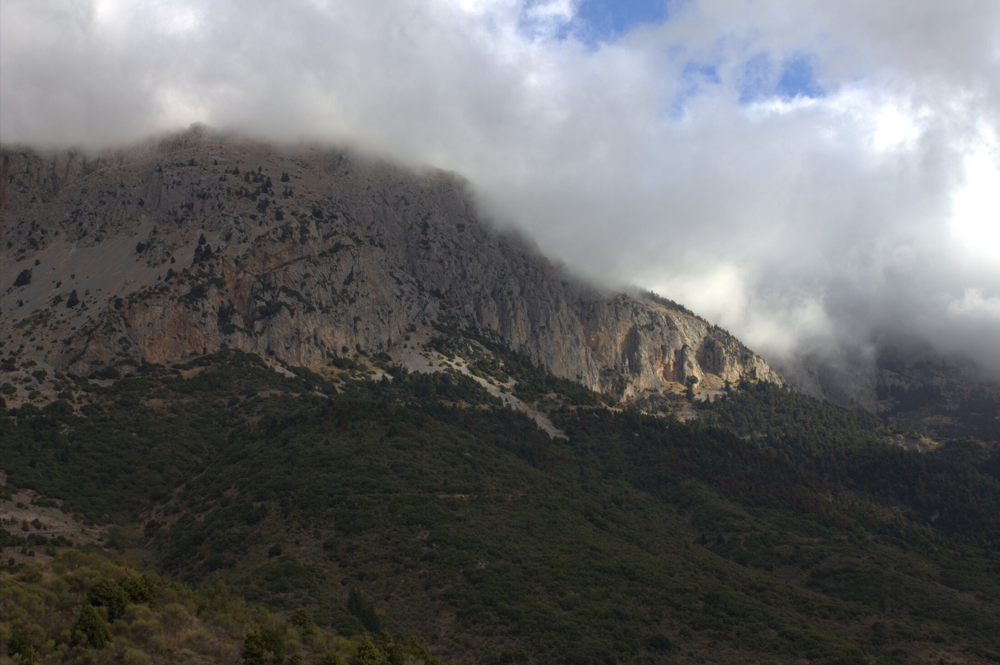
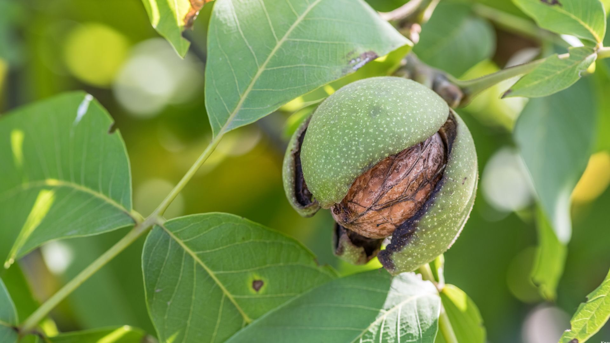
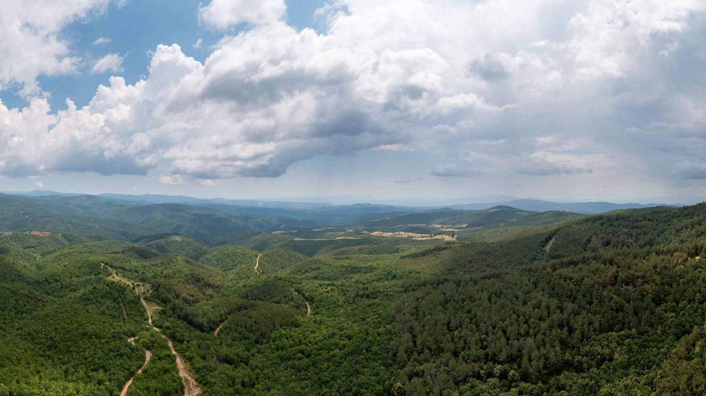
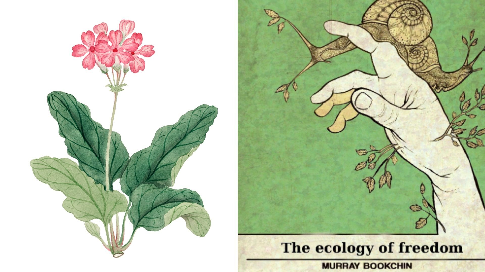
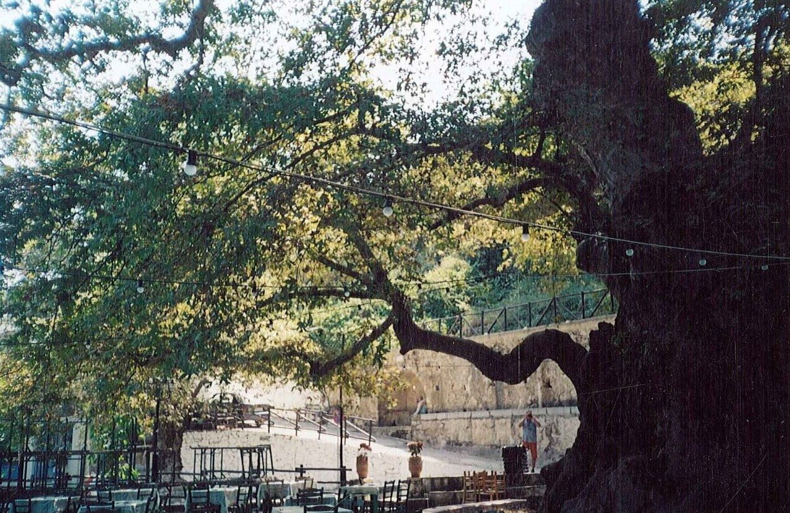
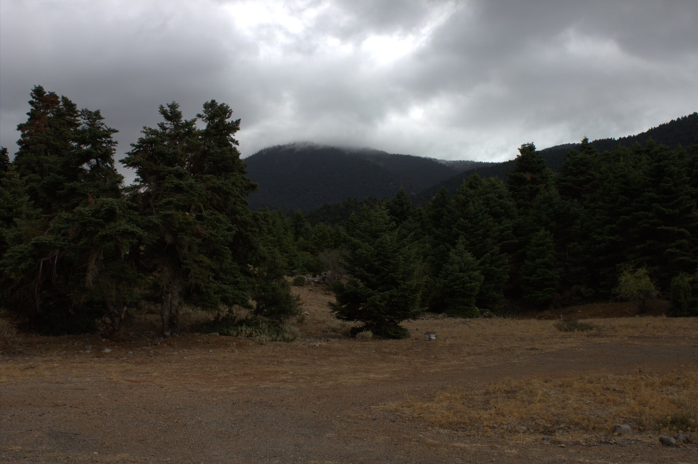
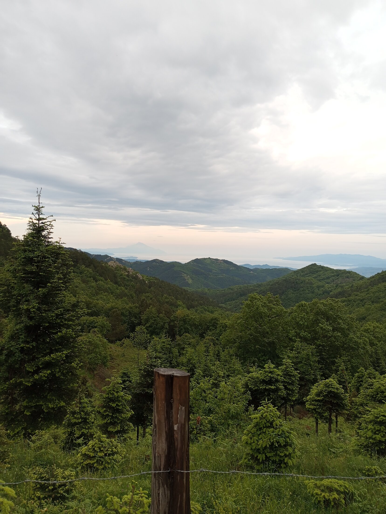

Τελευταία Νέα
Ενημερωθείτε για τις τελευταίες εξελίξεις, τις δράσεις μας και χρήσιμες συμβουλές για το περιβάλλον.

Πόσο μαγικός είναι ο Παρνασσός;
Πως θα γινόταν να μην το διαλέξει για σπίτι του ο Απόλλωνας; Υπάρχει κάποιος/α που να έχει περάσει έστω, από του Δελφούς και να μην έχει νιώσει αυτή την ενέργεια; Πως θα ήταν δυνατό κάποιος να επισκεφτεί τον Παρνασό και να μην κλονιστεί έστω και λίγο από τις δονήσεις του; Αυτά και άλλα πολλά μαζί κάνοντας απλά ένα "κλικ".

Η Καρυδιά
Περιβαλλοντική εκπαίδευση μπορεί να είναι μια δράση, μπορεί να είναι μια παρέμβαση στον κήπο μας ή στο άλσος της πόλης μας, μια πεζοπορία στο βουνό. Όμως μπορεί να είναι απλά ένα κείμενο, ένα ποιήμα και ένα τραγούδι. Εδώ μέσα από ένα ποιήμα για την καρυδιά και μπόλικη Σητειακή ντοπιολαλιά, μαθαίνουμε όσο πιο βιωματικά γίνεται για το αγαπημένο μας δέντρο την καρυδιά!
Υμηττός! Γιατί τον αγαπάμε;
Από Χολαργο και Παπάγου μέχρι Αργυρούπολη! Ποιος δεν έχει κάνει μια μικρή βολτίτσα στους πρόποδες του Υμηττού...

Δασικός χάρτης! Τι πρέπει να γνωρίζεις!
Ο Δασικός Χάρτης ενώ σχεδιάστηκε για να βοηθήσει στη δασική διαχείριση και στην επίλυση προβλημάτων φαίνεται πως δημιουργεί ακόμα περισσότερα. Αυτά είναι κάποια από τα πιο βασικά πράγματα που πρέπει να γνωρίζεις.

Δασικά Ακίνητα και ο Ρόλος του Δασολόγου
Όταν χιλιάδες ιδιοκτήτες ακινήτων στην Ελλάδα βλέπουν τα περουσιακά τους στοιχεία να «παγώνουν» εμποδίζοντας την μεταβίβαση και εν τέλει την αξιοποίηση τους και ίσως και το ιδιοκτησιακό τους καθεστώς.

Επαναπροσδιορίζοντας τον Κήπο μας
Η επιλογή να δημιουργήσουμε έναν κήπο με ενδημικά και τοπικά φυτά υπερβαίνει τα όρια της απλής κηπουρικής. Είναι μια συνειδητή απόφαση που ενσωματώνει την περιβαλλοντική ευθύνη και την επιδίωξη μιας πιο βιώσιμης καθημερινότητας. Σε μια εποχή που οι μεγάλες περιβαλλοντικές προκλήσεις φαντάζουν συχνά συντριπτικές, ο κήπος μας προσφέρει ένα πεδίο άμεσης και ουσιαστικής δράσης. Κάθε τοπικό φυτό που φυτεύουμε είναι μια μικρή, αλλά σημαντική, συμβολή στην προστασία του τόπου μας.

Η πολύτιμη παρακαταθήκη του Μάρεϊ Μπούκτσιν: Οικολογία, Δημοκρατία & Απελευθέρωση
Οποιαδήποτε περιβαλλοντική δράση, είτε επαγγελματική είτε εθελοντική από το σκάλισμα ενός κήπου ή τη φύτευση μιας φλαμουριάς ενέχει κάποιες αρχές, καποιους κανόνες! Διαβάζοντας ξανά το έργο του Μπούκτσιν συνειδητοποιούμε ποσό επίκαιρος και ουσιαστικός είναι ο λόγος του και για αυτό θέλουμε να το μοιραστούμε μαζί σας!

O Πλάτανος στο Κράσι
Ο Πλάτανος στο Κράσι Ηρακλείου αποτελεί ένα θαύμα της φύσης! Εκτός από όλους εμάς που απολαύσαμε τη σκιά και τη δροσιά που μας χάρισε αυτό το δέντρο όλα αυτα τα χρόνια ο σπουδαίος ποιητής Κωστής Φραγκούλης πρίν από περίπου 80 χρόνια "έπιασε κουβέντα" με τον πλάτανο στο Κράσι και μας άφησε αυτό το σπουδαίο λαϊκό δημιούργημα!

Ερμηνεία και Σφάλματα Δασικών Χαρτών
Η πρώτη φορά που το κράτος δημοσιοποιεί επίσημα τον χαρακτηρισμό κάθε έκτασης, δίνοντας την ευκαιρία στους πολίτες να ενημερωθούν και, κυρίως, να δράσουν και να διασφαλίσουν τις ιδιοκτησίες τους.

Αντίρρηση ή Αίτηση Διόρθωσης του δασικού χάρτη;
Η ανάρτηση των δασικών χαρτών σε όλη την επικράτεια έχει δημιουργήσει πολλά προβλήματα στους ιδιοκτήτες ακινήτων. Πολλοί από αυτούς βλέπουν τα ακίνητά τους να χαρακτηρίζονται ως δασικά ή αναδασωτέα, γεγονός που επηρεάζει την αξία και τη δυνατότητα μεταβίβασής τους. Σε αυτό το άρθρο θα προσπαθήσουμε να ξεκαθαρίσουμε τις έννοιες της αντίρρησης και της αίτησης διόρθωσης, ώστε να βοηθήσουμε τους ιδιοκτήτες να κατανοήσουν τις επιλογές τους.